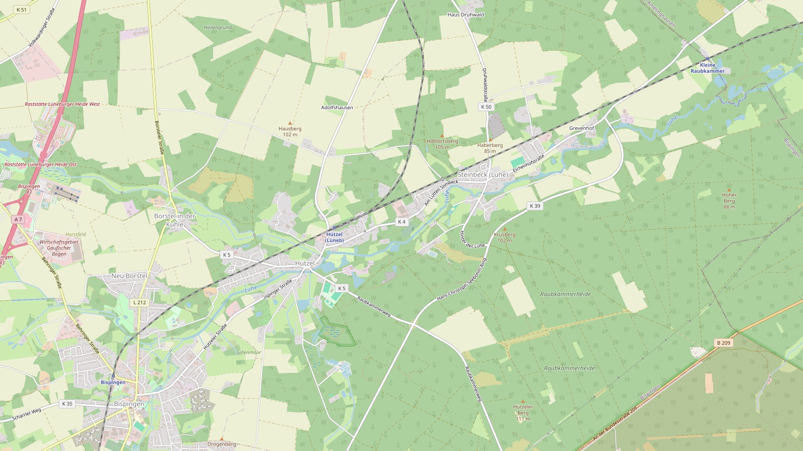

Zum Stimbeck – Gaststätte in Steinbeck an der Luhe, Lüneburger Heide
Bodenständige Küche, freundliche Bedienung und eine heimelige Stube in Steinbeck an der Luhe.
Das Gasthaus
Gastlichkeit wie bei Freunden
Familiäre Gaststätte mit bodenständigen Gerichten und freundlicher Bedienung in heimeliger Atmosphäre.
Mitten in Steinbeck an der Luhe kochen wir, was schmeckt: knusprige Schnitzel, saftige Burger, frische Salate und zur Saison eine eigene Karte. Kinder bekommen ihre eigenen Teller, und für Gäste, die es etwas kleiner mögen, gibt es den Seniorenteller.
-
Bodenständig gekocht
Schnitzel, Burger, Schlemmerpommes und Salate, alles frisch zubereitet.
-
Für die ganze Familie
Kindergerichte und Seniorenteller, damit jeder satt und zufrieden ist.
-
Mit Rücksicht auf Wünsche
Vegane Patties und Würste gibt es auf Wunsch. Fragen Sie einfach unser Team.
Öffnungszeiten
Wann wir für Sie kochen
| Montag | Ruhetag |
|---|---|
| Dienstag | Ruhetag |
| Mittwoch | Ruhetag |
| Donnerstag | 17:00 – 22:00 |
| Freitag | 17:00 – 22:00 |
| Samstag | 17:00 – 22:00 |
| Sonntag | 17:00 – 22:00 |
Warme Küche bis 21:00 Uhr.

Kartendaten © OpenStreetMap-Mitwirkende
Anfahrt
So finden Sie zu uns
Gaststätte Zum Stimbeck Am Lütten Stimbeck 429646 Bispingen – Steinbeck (Luhe)
- 1Über die A7 bis zur Anschlussstelle 43 Bispingen.
- 2Durch Bispingen Richtung Hützel und weiter auf der K 4 nach Steinbeck (Luhe), etwa 4 km nordöstlich vom Ortskern.
- 3Fürs Navi: Am Lütten Stimbeck 4, 29646 Bispingen.
Ein Klick auf die Karte öffnet Google Maps. Erst dann werden Daten an Google übertragen.